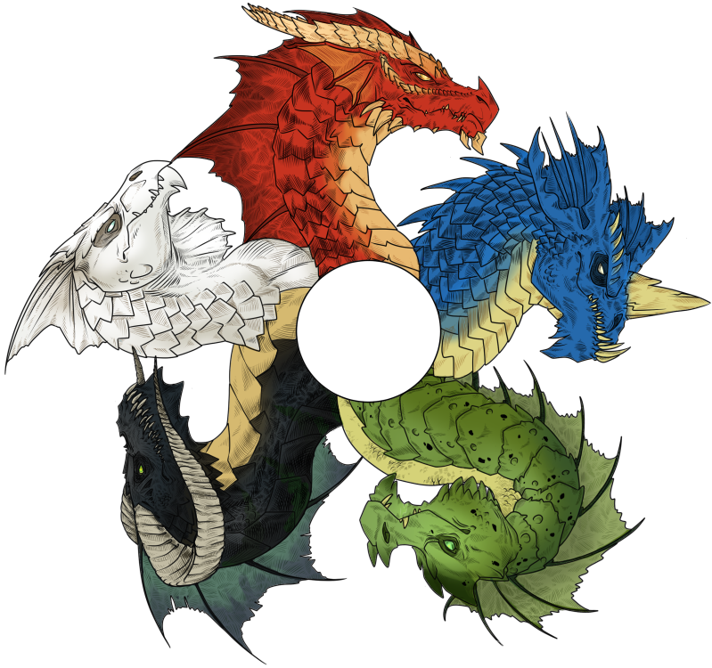

As curiosidades sobre os dragões que você está prestes a ler são, exclusivamente, da quinta edição de Dungeons & Dragons (D&D). Espera, não sabe o que é D&D?! Tudo bem, D&D é um jogo de tabuleiro de interpretação de papéis, onde os jogadores dizem o que fazem com seus aventureiros e o Mestre narra o jogo, o mundo e as consequências dos atos dos aventureiros. Nesse caso, nós vamos falar só dos dragões.
Dragões!!
Dragões são criaturas reptilianas grandes de origem antiga e poderes absurdos. Dragões verdadeiros, incluindo os dragões metálicos bons e os dragões cromáticos maus, são altamente inteligentes e possuem magia inata. Também estão nessa categoria criaturas remotamente relacionadas com os dragões verdadeiros, porém, menos poderosas, menos inteligentes e menos mágicas, como os pseudodragões e os famosos wyverns, que são fácilmente confundidos com os grandes dragões verdadeiros.
Os dragões verdadeiros
Dragões verdadeiros são repteis alados de linhagem ancestral e poderes assustadores. Eles são conhecidos e temidos por sua astúcia predatória e ganância, onde os dragões mais antigos são considerados como as criaturas mais poderosas no mundo. Os dragões também são criaturas mágicas cujo poder inato carrega suas temíveis armas de sopro e outras habilidades preternaturais.
Muitas criaturas, incluindo wyverns e tartarugasdragão, possuem sangue dracônico. No entanto, os dragões verdadeiros são formados pelas duas vastas categorias dos dragões cromáticos e metálicos. Os dragões azul, branco, negro, verde e vermelho são egoístas, malignos e temidos por todos. Os dragões de bronze, cobre, latão, ouro e prata são nobres, benignos e altamente respeitados pelos sábios.
Embora seus objetivos e ideais variem tremendamente, todos os dragões verdadeiros ambicionam riqueza, acumulando montes de moedas e coletando gemas, joias e itens mágicos. Dragões com grandes montanhas de tesouro detestam abandona-las por muito tempo, aventurando-se fora de seus covis apenas para patrulhar e se alimentar.
Dragões verdadeiros passam por quatro estágios distintos de vida, de pequenos filhotes até dragões anciões, que podem viver por milhares de anos. A partir desse momento, sua força pode se tornar incomparável e suas pilhas de tesouro podem crescer além do imaginável.
Dragões cromáticos
Os dragões azul, branco, negro, verde e vermelho representam o lado maligno da espécie dracônica. Agressivos, vorazes e vaidosos, os dragões cromáticos são sábios cruéis e tiranos poderosos temidos por todas as criaturas – incluindo uns aos outros.
Guiados pela Ganância
Os dragões cromáticos cobiçam tesouros e essa ganância impele cada artifício e trama deles. Eles acreditam que as riquezas do mundo pertencem a eles por direito, e um dragão cromático confisca essas riquezas sem se preocupar com os humanoides e outras criaturas que “roubaram” elas. Com suas pilhas de moedas, gemas brilhantes e itens mágicos, o tesouro de um dragão é o material das lendas. No entanto, os dragões cromáticos não tem interesse em comercializar, acumulando riqueza com o único intuito de possui-la.
Criaturas Egocêntricas
Os dragões cromáticos são unidos pelo senso de superioridade, considerando a si próprios como as mais poderosas e valorosas de todas as criaturas mortais. Quando eles interagem com outras criaturas, isso ocorre apenas para dar seguimento a seus próprios interesses. Eles acreditam no seu direito inerente de governar e essa crença é o objetivo de vida da personalidade e visão de mundo de cada dragão cromático. Tentar humilhar um dragão cromático é como tentar convencer os ventos a pararem de se mover. Para essas criaturas, humanoides e animais, encaixam-se como caça ou bestas de carga e não são merecedores de qualquer respeito.
Covis Perigosos
O covil de um dragão serve como sua base de poder e um cofre para seu tesouro. Com sua resistência e tolerância inatas para os efeitos de ambientes severos, um dragão escolhe ou constrói seu covil não para se abrigar, mas para se defender, preferindo múltiplas entradas e saídas e segurança para seu tesouro.
A maioria dos covis de dragões cromáticos estão escondidos em locais perigosos e remotos para impedir que ninguém além dos mais audaciosos mortais alcancem-nos. Um dragão negro irá habitar no coração de um vasto pântano, enquanto que um dragão vermelho irá reclamar sua caldeira em um vulcão ativo. Além das defesas naturais de seus covis, dragões cromáticos poderosos usam guardiões e armadilhas mágicas e subvertem criaturas a proteger seus tesouros
Rainha dos Dragões Malignos
Tiamat, a Rainha Dragão, é a divindade governante das espécies de dragões malignos. Ela reside em Avernus, a primeira camada dos Nove Infernos. Como uma deus menor, Tiamat tem o poder de conceder magias a seus adoradores, apesar de ela detestar partilhar seu poder. Ela sintetiza a avareza dos dragões malignos, acreditando que o multiverso e todos os tesouros nele serão, um dia, dela e apenas dela.
Tiamat é um dragão gigantesco cujas cinco cabeças refletem as formas dos dragões cromáticos que a veneram – azul, branco, negro, verde e vermelho. Ela é um terror no campo de batalha, capaz de aniquilar exércitos inteiros com suas cinco armas de sopro, sua conjuração formidável e suas garras assustadoras.
O inimigo mais odiado de Tiamat é Bahamut, o Dragão de Platina, com quem ela divide o controle da crença da espécie dracônica. Ela também possui uma inimizade especial por Asmodeu, que há muito tempo atrás a despojou do governo de Avernus e que continua a inibir o poder da Rainha Dragão.

Dragões metálicos
Os dragões metálicos buscam preservar e proteger, vendo a si próprios como uma poderosa raça dentre as muitas raças que possuem um lugar no mundo.
Nobre Curiosidade
Dragões metálicos cobiçam tesouros assim como os malignos da espécie cromática, mas eles não são tão guiados pela ganância na sua busca por riquezas. Ao invés disso, os dragões metálicos são levados a investigar e coletar, pegando relíquias sem dono e armazenando-as em seus covis. O tesouro de um dragão metálico é cheio de itens que refletem sua persona, contando sua história e preservando sua memória. Da mesma forma, poderosos itens mágicos e até mesmo artefatos malignos são, algumas vezes, escondidos nos montes de tesouro de um dragão metálico.
Um dragão metálico pode ser persuadido a se desfazer de um item de seu tesouro para um bem maior. No entanto, a necessidade ou direito de outra criatura ao item é, muitas vezes, pouco clara do ponto de vista do dragão. Um dragão metálico deve ser subornado ou, de alguma forma, convencido de se desfazer do item.
Metamorfos Solitários
Em algum momento de suas longas vidas, os dragões metálicos ganham a habilidade mágica de assumir as formas de humanoides e bestas. Quando um dragão aprende como se disfarçar, ele pode se imergir em outras culturas por um tempo. Alguns dragões são muito tímidos ou paranoicos para se afastar de seus covis e de suas pilhas de tesouros, porém, dragões mais ousados adoram vagar pelas ruas de cidades em formas humanoides, fazendo parte da cultura e culinária locais e divertindo-se ao observar como as raças menores vivem.
Alguns dragões metálicos preferem se manter o mais longe possível da civilização para não atrair inimigos. No entanto, isso significa que eles estão, muitas vezes, longe do contato com os eventos atuais.
A Persistência da Memória
Dragões metálicos possuem ótimas memórias e eles formam opiniões sobre humanoides baseados nos contatos anteriores com os humanoides em questão. Dragões bons podem reconhecer linhagens humanoides pelo cheiro, farejando cada pessoa que eles conhecem e lembrando de quaisquer parentes que eles tenham tido contato com o passar dos anos. Um dragão de ouro pode nunca suspeitar da duplicidade de um vilão astuto, assumindo que o vilão tenha a mesma mente e coração bons e virtuosos de uma avó. Por outro lado, o dragão pode ficar ressentido de um nobre paladino cujo ancestral tenha usurpado uma estátua de prata do tesouro do dragão três séculos atrás.
Rei dos Dragões Bons
A divindade governante dos dragões metálicos é Bahamut, o Dragão de Platina. Ele vive nos Sete Paraísos Escalonados de Celestia, mas muitas vezes vaga pelo Plano Material com a aparência mágica de um humano idoso em roupas de camponês. Nessa forma, ele é geralmente acompanhado por sete canários dourados – na realidade, sete dragões de ouro anciões em forma metamorfoseada.
Bahamut raramente interfere nos negócios das criaturas mortais, apesar de ele fazer exceções para ajudar a frustrar as maquinações de Tiamat, a Rainha Dragão, e sua prole maligna. Clérigos bondosos e paladinos, às vezes, veneram Bahamut por sua dedicação à justiça e a proteção. Como um deus menor, ele tem poder para conceder magias divinas.